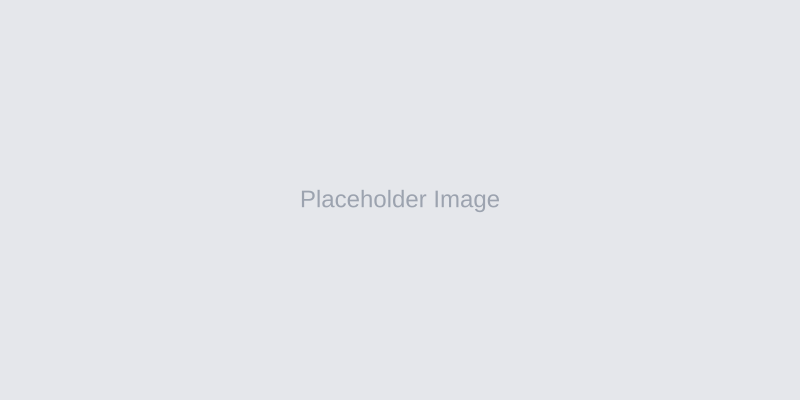

【外协】任务自动化配置
项目时间：2025.12 · A端 · 逻辑配置

【外协】可视化任务看板
项目时间：2025.12 · A端 · 看板
【本本商家端】退货管理
项目时间：2023.05 · B端 · 商家端 · 逆向支付流程
【本本商家端】支持商家主动退款
项目时间：2023.06 · B端 · 商家端 · 逆向支付流程
【工业平台】Shopworx
项目时间：2020.12 · B端 · 国际团队合作 · 非标自动化
Picpaw
项目时间：2022.08 · B端 · 翻译工具
Pinocchio
项目时间：2022.09 · C端 · 新闻资讯App
Food Print
项目时间：2021.12 · C端 · 社交 · 食品交易